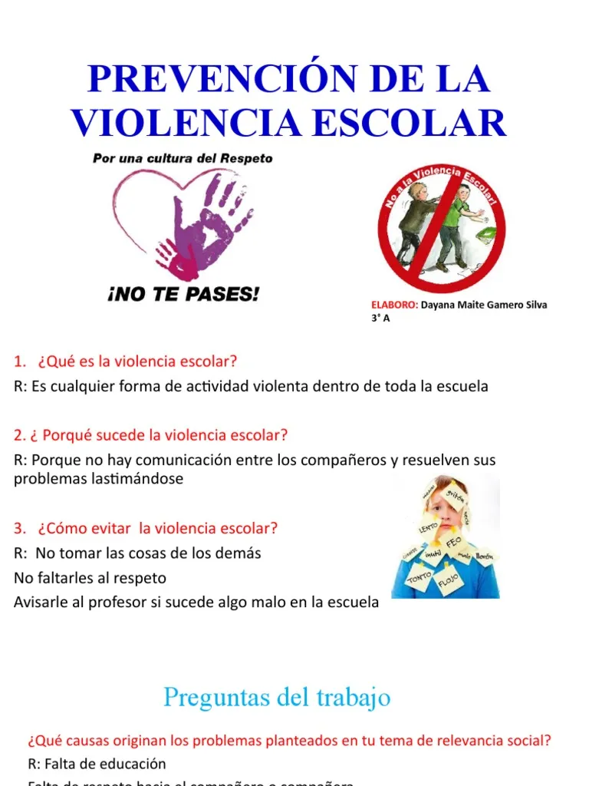

¿QUE HACER?
se requiere un enfoque integral que involucre a toda la comunidad educativa (estudiantes, docentes, padres y directivos) mediante la implementación de protocolos claros, fomento de la empatía y la comunicación abierta, y la creación de entornos seguros e inclusivos.
¿COMO PREVENIRLO?
Para prevenir la violencia escolar (bullying) de manera efectiva, es crucial adoptar un enfoque multifacético que involucre a estudiantes, padres y educadores. Las acciones clave se centran en la educación emocional, la comunicación abierta, el establecimiento de normas claras y la creación de un entorno seguro e inclusivo.
A CONTINUACION EJEMPLOS
Establecer Normas y Protocolos Claros Crear un código de conducta: Desarrollar conjuntamente con los estudiantes, padres y docentes un código de conducta claro que defina qué es la violencia y el acoso, y que establezca las consecuencias de no cumplirlo. Definir protocolos de actuación: Asegurar que toda la comunidad escolar conozca los pasos a seguir en caso de presenciar o sufrir un acto de violencia. Aplicación consistente: Las normas y consecuencias deben aplicarse de manera justa, rápida y consistente para todos los estudiantes, sin excepciones.
